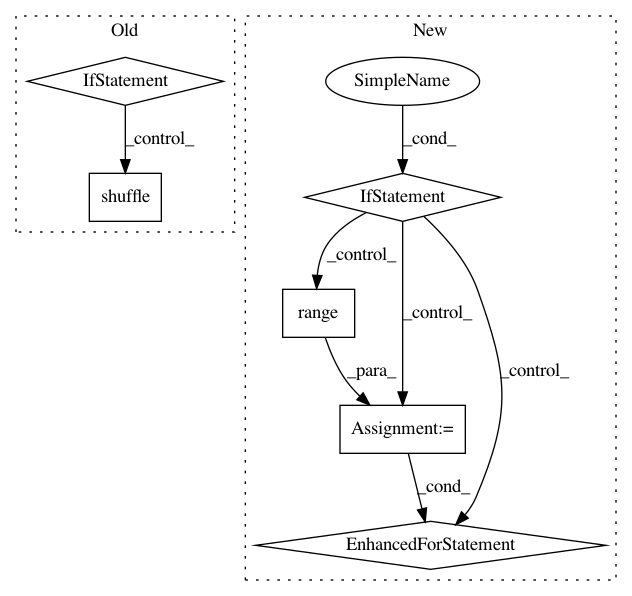

2a1a6851344172e0134f3c5f4f5c1021975f2812,torchnlp/samplers/bucket_batch_sampler.py,BucketBatchSampler,__iter__,#BucketBatchSampler#,37
Before Change
batches = list(super().__iter__())
if self.last_batch_first:
last_batch = batches.pop()
if self.shuffle:
random.shuffle(batches)
if self.last_batch_first:
batches.insert(0, last_batch)
return iter(batches)
After Change
yield batch
if not self.biggest_batches_first:
return get_batches()
else:
batches = list(get_batches())
indices = heapq.nlargest(
5,
range(len(batches)),
key=lambda i: len(pickle.dumps([self.data[j] for j in batches[i]])))
front = [batches[i] for i in indices]
for i in sorted(indices, reverse=True):
batches.pop(i)
batches[0:0] = front
return iter(batches)
In pattern: SUPERPATTERN
Frequency: 3
Non-data size: 6
Instances
Project Name: PetrochukM/PyTorch-NLP
Commit Name: 2a1a6851344172e0134f3c5f4f5c1021975f2812
Time: 2018-03-11
Author: petrochukm@gmail.com
File Name: torchnlp/samplers/bucket_batch_sampler.py
Class Name: BucketBatchSampler
Method Name: __iter__
Project Name: deepinsight/insightface
Commit Name: 1399df2342774f9130ed676fd991d63411d3b6b5
Time: 2019-01-08
Author: guojia@gmail.com
File Name: alignment/data.py
Class Name: FaceSegIter
Method Name: reset
Project Name: deepinsight/insightface
Commit Name: faabf5663a0d8fbdee527c03d396106dbd855270
Time: 2019-01-08
Author: guojia@gmail.com
File Name: alignment/data.py
Class Name: FaceSegIter
Method Name: reset